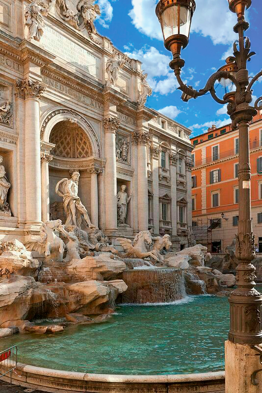

FOTO #1
Añadí máscaras de capas, hice uso de la herramienta selección rápida, convertí en objeto inteligente, distorsioné y desplacé para lograr sobreponer una imagen de cielo más llamativa.
FOTO #2
Usé la herramienta clonar para eliminar cables, tubos y focos que afectaban la estética de la imagen.